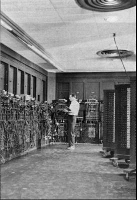

У світі комп'ютерів інновації розцвітали з появою ENIAC в 1946 році. ENIAC, величезна машина з більше ніж 17 тисячами вакуумних ламп, була першою електронною обчислювальною машиною та відзначалась величезними розмірами та споживанням електроенергії. Перші обчислювальні пристрої, такі як Атанасофф-Беррі Computer (ABC) в 1930-х та ENIAC, визначили еру комп'ютерів.
У наступні роки настала ера мініатюризації. 1950-1960-і роки принесли транзисторні комп'ютери, замінюючи вакуумні лампи транзисторами. Такі системи, наприклад, UNIVAC, були меншими, надійнішими та більш енергоефективними. 1970-і роки відзначилися початком епохи мікропроцесорів, що веде до виникнення особистих комп'ютерів (PC).
З 1980-х років особисті комп'ютери вирісши за розмірами, стали доступні широкому загалу. Apple та IBM грали ключову роль у популяризації ПК. Розвиток мікропроцесорів і технології вів до зменшення розмірів, підвищення продуктивності та універсалізації комп'ютерів.